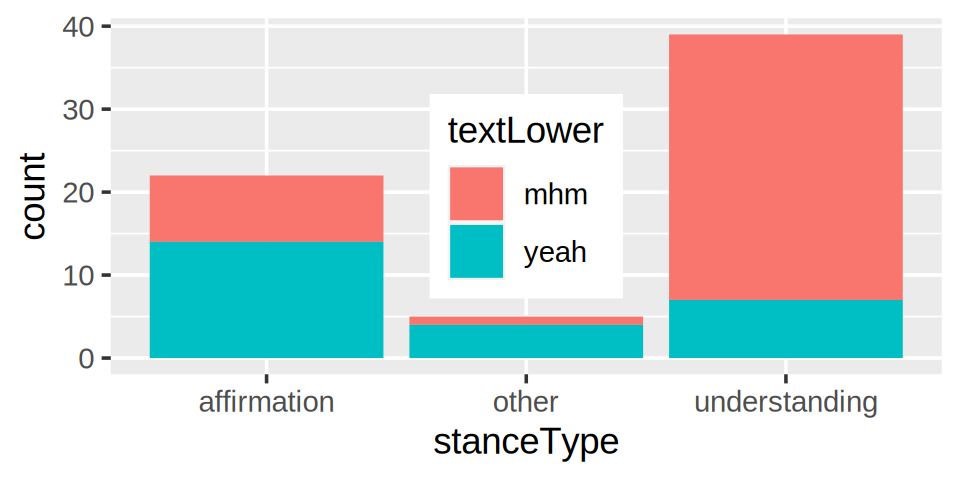
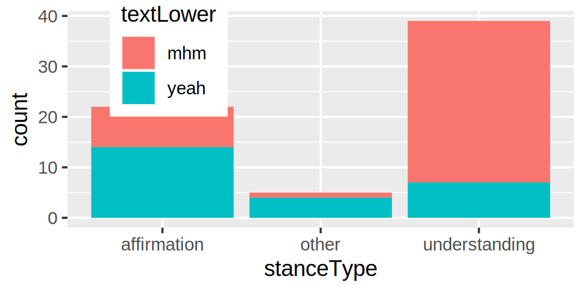

# A tibble: 66 × 3
participant textLower stanceType
<chr> <chr> <chr>
1 WOOD mhm affirmation
2 WOOD mhm other
3 ALICE yeah other
4 ALICE yeah other
5 MARY yeah understanding
6 MARY yeah understanding
7 MARY yeah affirmation
8 ALICE mhm affirmation
9 MARY mhm understanding
10 MARY mhm understanding
# ℹ 56 more rowsIntroduction to ggplot2 theme()
Overview
This is a short(!) introduction to the design principles of theme, to help you:
Get a feel for what parts of the plot can be modified how
Develop a vocabulary for specific components of a plot
Explore theme extensions developed by the community
What is Theme in ggplot?
Broadly, it’s the style of your plot. But more technically, Theme refers to styles that are not mapped from the data
Is a Theme:
The font of the plot’s title
The color of the x-axis line
Is NOT a Theme:
The fill of the rectangles in
geom_bar()The size of the text in
geom_label()
Data
Plot

Theme in code
“Color the x-axis line red”:
bar_plot +
theme(axis.line.x = element_line(color = "red"))The structure of theme()
theme( COMPONENT = STYLE )
“The x-axis line should be a red colored line”:
theme(axis.line.x = element_line(color = "red"))Components are hierarchically organized pieces of a plot
Styles are values specifying the appearance of a component
- Often as
element_line(),element_rect(),element_text(), …
Theme families
theme() has lots of options, but not that scary to navigate!
Theme elements are organized hierarchically:
theme(
axis.line,
axis.line.x,
axis.line.x.top,
axis.line.x.bottom,
axis.line.y,
axis.line.y.left,
axis.line.y.right,
)Theme families
theme() has lots of options, but not that scary to navigate!
Theme elements are organized hierarchically:
theme(
axis.line,
axis.line.x,
axis.line.x.top,
axis.line.x.bottom,
axis.line.y,
axis.line.y.left,
axis.line.y.right,
)Styles are inherited if left unspecified
Theme inheritance: axis line
“X-axis line is red”
bar_plot +
theme(axis.line.x = element_line(color = "red"))Theme inheritance: axis line
“Axis lines are thick, x-axis line is red”
bar_plot +
theme(
axis.line = element_line(linewidth = 2),
axis.line.x = element_line(color = "red")
)Theme inheritance: axis title
theme(
axis.title,
axis.title.x,
axis.title.x.top,
axis.title.x.bottom,
axis.title.y,
axis.title.y.left,
axis.title.y.right,
)Theme inheritance: axis title
“Axis titles are big”
bar_plot +
theme(
axis.title = element_text(size = 20)
)Theme inheritance: axis title
“Axis titles are big, x-axis title is blue”
bar_plot +
theme(
axis.title = element_text(size = 20),
axis.title.x = element_text(color = "blue")
)Theme inheritance: axis title
“Text is in italics, axis titles are big, x-axis title is blue”
bar_plot +
theme(
text = element_text(face = "italic"),
axis.title = element_text(size = 20),
axis.title.x = element_text(color = "blue")
)Styles with element_*()
Now we have some questions…
What are the options for different element functions?
?element_text()Which element_*() should I use? Check the docs!
?theme()How can we modify the legend background, for example?
theme(... = ...)Theme practice: legend background
legend.background takes an element_rect() and we have the following options available:
args(element_rect)function (fill = NULL, colour = NULL, linewidth = NULL, linetype = NULL,
color = NULL, inherit.blank = FALSE, size = deprecated())The options are similar to aesthetics in geom layers:
-
fill: Rectangle fill color -
color/colour: Outline color -
linetype: Outline line type -
linewidth: Outline line thickness
Theme practice: legend background
bar_plot +
theme(legend.background = element_rect(fill = "red", color = "blue"))Styles with specific choices
But not all aspects of the plot are about the appearance of an element:
-
aspect.ratio: The aspect ratio of a plot -
legend.position: The positioning of plot legend -
title.position: The positioning of plot title -
plot.margin: Margins (padding) around the plot
These are exceptions that don’t take element_*() specifications.
- What does the documentation say about
legend.position?
Theme practice: legend position
bar_plot +
theme(legend.position = "none")Theme practice: legend position
bar_plot +
theme(legend.position = "top")Theme practice: legend position
bar_plot +
theme(legend.position = "right")
Theme practice: legend position
bar_plot +
theme(legend.position = "bottom")Theme practice: legend position
bar_plot +
theme(legend.position = "left")Theme practice: legend position
Theme practice: legend position
Interim summary
What we’ve seen so far:
- You specify the style of specific components of your plot using
theme() - Themes are hierarchical, and nesting is shown by the
"."in the argument name - For the most part, styles are specified using
element_*()functions - Always consult the documentation! https://ggplot2.tidyverse.org/reference/theme.html
Last few minutes
I want to quickly showcase some:
Complete themes
Theme extensions
Additional resources
Complete themes
bar_plotComplete themes
bar_plot +
theme_minimal()Complete themes
bar_plot +
theme_classic()Complete themes
bar_plot +
theme_grey() # Default
Complete themes
Additional feature: scaling with base_size
bar_plot +
theme_classic(base_size = 5)Complete themes
Additional feature: scaling with base_size
bar_plot +
theme_classic(base_size = 15)Theme extensions
Theme extensions (mostly) come in one of two forms:
Custom complete themes
Custom theme
element_*()s
You can search for ggplot2 theme extensions like you would any other ggplot2 extension package:
Complete theme extensions
library(ggthemes)
bar_plot +
theme_excel()Complete theme extensions
Modify on top of complete themes
library(ggthemes)
bar_plot +
theme_wsj(base_size = 10) +
theme(legend.title = element_blank()) # can substitute any elementTheme element_*() extensions
library(elementalist) # devtools::install_github("teunbrand/elementalist")
bar_plot +
theme(axis.line.x = element_line_wiggle(color = "red", amount = 5),
legend.background = element_rect_wiggle(color = "black"))Theme element_*() extensions
library(elementalist) # devtools::install_github("teunbrand/elementalist")
bar_plot +
theme(axis.line.x = element_line_wiggle(color = "red", amount = 5),
legend.background = element_rect_wiggle(color = "black"))bar_plot +
theme(axis.line.x = element_line_wiggle(color = "red", amount = 5, seed = 123L),
legend.background = element_rect_wiggle(color = "black", seed = 123L))Resources
Some further resources:
Theme components (gallery): ggplot2tutor.com/theme/
Complete themes (gallery): r-charts.com/ggplot2/themes
Custom fonts setup in R (guide): yjunechoe.github.io/posts/2021-06-24-setting-up-and-debugging-custom-fonts/
Data visualization principles w/ ggplot (guide): cedricscherer.netlify.app/2019/08/05/a-ggplot2-tutorial-for-beautiful-plotting-in-r/
yjunechoe.github.io/ggplot2-theme-intro